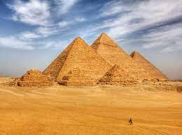

15 Places You Must Visit In Your Life
Your Definite Bucket List
15. Great Barrier Reef, Australia

The Great Barrier Reef is the world's largest coral reef system composed of over 2,900 individual reefs and 900 islands stretching for over 2,300 kilometres (1,400 mi) over an area of approximately 344,400 square kilometres (133,000 sq mi). The reef is located in the Coral Sea, off the coast of Queensland, Australia. The Great Barrier Reef can be seen from outer space and is the world's biggest single structure made by living organisms. CNN labelled it one of the seven natural wonders of the world in 1997. Australian World Heritage places included it in its list in 2007.
14. The Pyramids of Giza, Egypt

The Pyramids of Giza are the most famous of the ancient monuments in Egypt. The pyramid complex is located in the city of Giza, on the Nile River, in the country of Egypt. The complex consists of six pyramids, each of which is about the same size. The pyramids are located in the area of the Great Pyramid complex, which is located in the centre of the city of Giza. The pyramid complex is about 3,000 metres (9,000 ft) long and 3,000 metres (9,000 ft) wide.
13. Salar de Uyuni, Bolivia
Salar de Uyuni is the capital of Bolivia, and is the largest city in the country. It is located in the western part of the country, in the state of Potosí. The city is located in the Potosí Department of Bolivia. The city is the largest city in the country, and is the largest city in the country. The city is located in the western part of the country.
12. The Grand Canyon, United States of America

The Grand Canyon is a large canyon system in the southern part of the United States. The Grand Canyon is 277 km (160 mi) long, up to 1,852 metres (6,898 ft) in height, and is located in the state of Arizona. The Grand Canyon is the world's longest canyon, and is the second longest canyon in the world after the Death Valley.
11. Easter Island, Chile
Easter Island is a volcanic island in the South Pacific Ocean, about 300 kilometres (190 mi) south of the island of Hawaii. It is the largest island in the South Pacific Ocean, and is the most southern of the three main islands of the South Pacific Ocean. Easter Island is the only island in the South Pacific Ocean that is not an island in the South Atlantic Ocean.